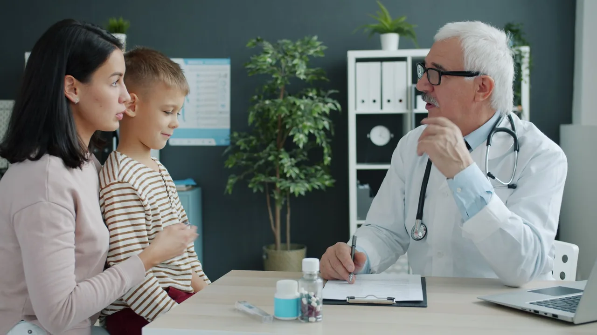

Your walk-in clinic in Churchill Meadows
No appointment needed. Two family physicians see patients six days a week for everyday illness and minor injuries — covered by OHIP, on Artesian Drive.
Clinic address, hours and telephone
Find us
3050 Artesian Drive, Unit 6
Mississauga, ON L5M 7P5
Get directions
Opening hours
Monday to Friday, 9am–7pm
Saturday, 9am–3pm
Closed Sunday
Speak to the clinic
(905) 607-6495
Fax (905) 607-0881
Call ahead to check how busy we are.
Seen today, not next month
You do not need to be a registered patient and you do not need to book. Come in during opening hours, bring your health card, and one of our physicians will see you.
-
Come in during opening hours
Arrive any time the clinic is open. Earlier in the day and earlier in the week are usually quieter.
-
Register at the front desk
Hand over your Ontario health card. The front desk will take a few details and explain the wait.
-
See a physician
You will be seen by Dr. Myint or Dr. Girgis, who will examine you, treat you, and arrange any prescription, test or referral you need.
Everyday medical care, close to home
The kinds of problems our physicians see most often. If you are not sure whether we can help with something, call the clinic first — we would rather tell you on the phone than have you make the journey for nothing.
Everyday illness
Coughs, colds, sore throats, fevers, flu symptoms, ear and eye infections, urinary tract infections, skin rashes and other common infections.
Minor injuries
Sprains and strains, minor cuts and grazes, minor burns, bruising, and wound care and dressing changes.
Prescriptions and refills
New prescriptions where appropriate and refills of an existing medication. There is a pharmacy next to the clinic.
Vaccinations and flu shots
Seasonal flu shots and routine publicly funded immunisations, subject to availability.
Forms, notes and requisitions
Medical notes, routine forms and laboratory requisitions. Some of these are not covered by OHIP — please ask the front desk before your appointment.
Ongoing and follow-up care
Blood pressure and routine monitoring, review of results, follow-up on an earlier visit, and referrals to a specialist when they are needed.
Care that carries on after today
A walk-in visit solves the immediate problem. Some things need following up — blood pressure that needs watching, a result to go over, a referral to chase, a long-term condition to keep steady.
Churchill Medical Clinic is a family practice as well as a walk-in clinic, so the same physicians can look after that continuing care. Whether the clinic is taking new family practice patients changes from time to time, so please call and ask.
Emergency and after-hours care
This clinic is not an emergency department. If you have chest pain, trouble breathing, severe bleeding, signs of a stroke, or any other emergency, call 911 or go to your nearest hospital emergency department. For free health advice any time of day, call Health811 by dialling 811.
Two family doctors, both on the public register
Every credential below can be checked against the College of Physicians and Surgeons of Ontario public register, which lists both physicians at this address.
Dr. Khin Maung Myint
Family Physician
Dr. Samira Wahba Azer Girgis
Family Physician
What to bring with you
- Your Ontario health card — this is what makes the visit free
- A list of every medication you take, including anything bought over the counter
- Details of any allergies, especially to medication
- Any results, letters or paperwork relating to the problem
- For a child, their health card and immunisation record if you have it
If you have lost your health card or it has expired, come in anyway and speak to the front desk. They will tell you where you stand before you are seen.
Before you visit
Do I need an appointment?
No. Churchill Medical Clinic is a walk-in clinic, so you can come in during opening hours without booking. Calling ahead on (905) 607-6495 is still worth doing — the front desk can tell you how busy the clinic is and confirm that a physician is in.
What does a visit cost?
If you have a valid Ontario health card, your visit is covered by OHIP and there is nothing to pay. A small number of services are not insured by OHIP — certain notes, forms and letters, for example. The front desk will tell you the fee before anything is done.
What should I bring?
Your Ontario health card, a list of the medications you take (including anything you buy over the counter), and details of any allergies. If you are following up on an earlier problem, bring any results or letters you have.
Is the clinic taking new family practice patients?
This changes from time to time, so please call the clinic on (905) 607-6495 and ask. We would rather tell you honestly on the phone than have you travel in and be turned away.
What languages are spoken at the clinic?
English, Arabic and Burmese. Dr. Girgis speaks Arabic and Dr. Myint speaks Burmese.
Feeling unwell today?
Walk in during opening hours, or call the front desk first to check how busy the clinic is.
Hours can change at short notice. A quick call before you travel is always worth it.